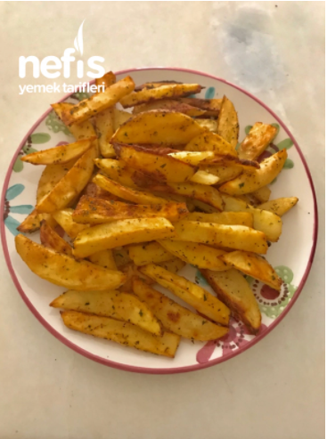

Nasil Yapılır
-
Patateslerin kabuklarını soyup yağda kızartacak incelikte doğrayalım.
-
Su doldurduğumuz bir kaba patatesleri ve karbonatı ekleyelim ve karbonat eriyene kadar karıştıralım, 15 dakika bu şekilde bekletelim.
-
Beklettiğimiz patatesleri yıkayalım, süzdürelim ve kağıt havlu ile nemini iyice alalım.
-
Yağını, tuzunu, baharatlarını ekleyip yağlı kağıt serdiğimiz tepsiye patatesleri dizelim.
-
200 derecede ısıttığımız fırında 20 dakika kadar pişirelim.
Görsel
